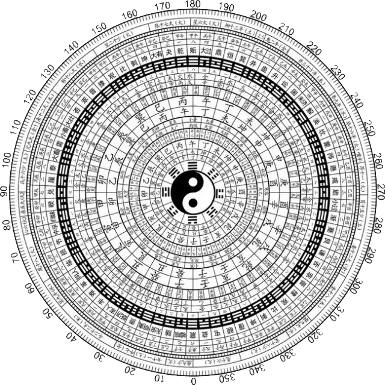

上善若水，水善利万物而不争，处众人之所恶，故几于道。
居善地，心善渊，与善仁，言善信，政善治，事善能，动善时，夫唯不争，故无尤。
昔之得一者，天得一以清，地得一以宁，神得一以灵，谷得一以盈，万物得一以生，候王得一以为天下贞，其致一也，天无以清将恐裂，地无以宁将恐发（废），神无以灵将恐歇，谷无以盈将恐竭，万物无以生将恐灭，候王无以贞将恐蹶。故贵以贱为本，高以下为基。是以候王自称孤寡不谷，此以贱为本也。非乎？故致数舆无舆，不欲禄禄如玉，珞珞如石。

点击罗盘生成你的今日运势